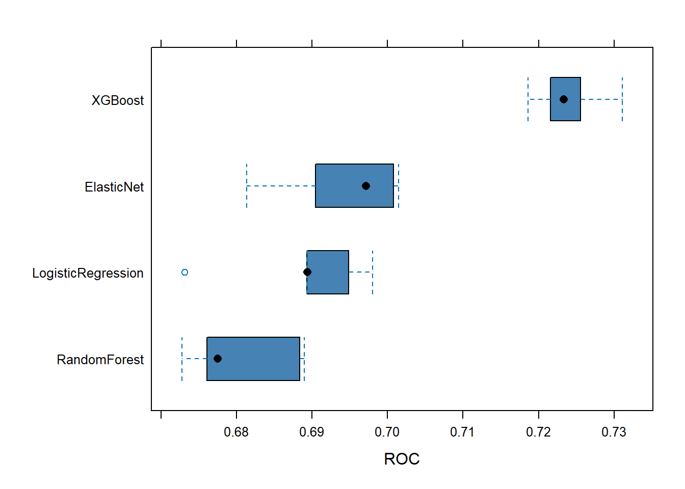
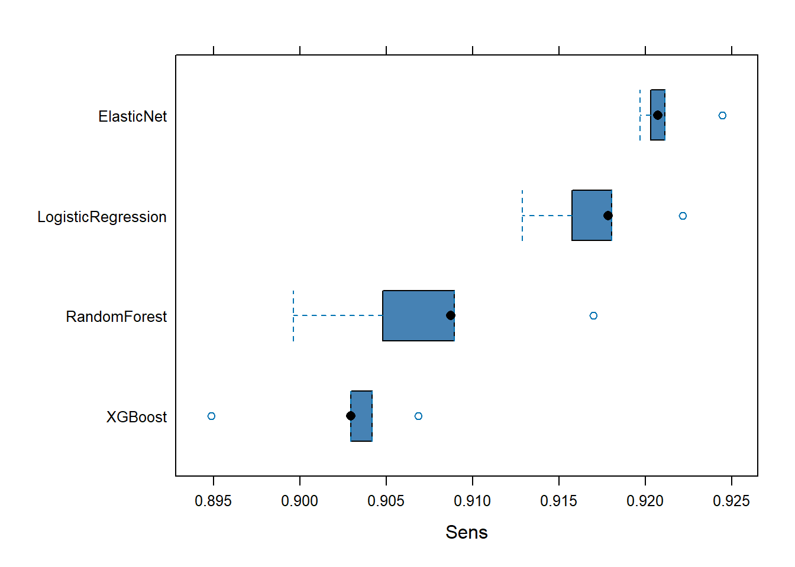
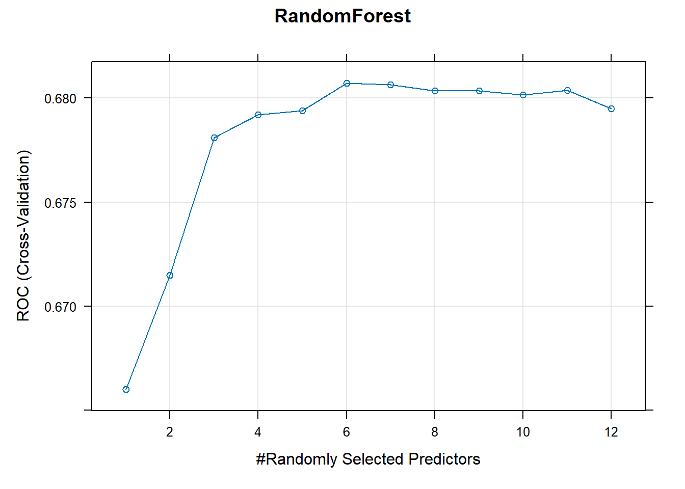

| Variable | Summary |
|---|---|
| WEAPON_FLAG_COUNT | Min. -0.4 1st Qu. -0.4 Median -0.4 Mean 0 3rd Qu. -0.4 Max. 5.4 |
| STOP_DURATION_MINUTES | Min. -0.66 1st Qu. -0.4 Median -0.26 Mean 0 3rd Qu. 0.13 Max. 65.35 |
| SUSPECT_ACTIONS_COUNT | Min. -0.88 1st Qu. -0.88 Median 0.55 Mean 0 3rd Qu. 0.55 Max. 6.3 |
| SUSPECT_RACE_DESCRIPTION | Hispanic: 15680: (29.98%) Other: 397: (0.76%) WHITE: 4346: (8.31%) BLACK: 30757: (58.81%) Asian: 1117: (2.14%) |
| PHYSICAL_FORCE_CEW_FLAG | N: 52043: (99.51%) Y: 254: (0.49%) |
| PHYSICAL_FORCE_DRAW_POINT_FIREARM_FLAG | N: 49961: (95.53%) Y: 2336: (4.47%) |
| PHYSICAL_FORCE_HANDCUFF_SUSPECT_FLAG | N: 43132: (82.48%) Y: 9165: (17.52%) |
| PHYSICAL_FORCE_OC_SPRAY_USED_FLAG | N: 52289: (99.98%) Y: 8: (0.02%) |
| PHYSICAL_FORCE_OTHER_FLAG | N: 51165: (97.84%) Y: 1132: (2.16%) |
| PHYSICAL_FORCE_RESTRAINT_USED_FLAG | N: 51034: (97.58%) Y: 1263: (2.42%) |
| PHYSICAL_FORCE_VERBAL_INSTRUCTION_FLAG | N: 3186: (6.09%) Y: 49111: (93.91%) |
| PHYSICAL_FORCE_WEAPON_IMPACT_FLAG | N: 52283: (99.97%) Y: 14: (0.03%) |
| SUSPECT_ARRESTED_FLAG | N: 34513: (65.99%) Y: 17784: (34.01%) |
Project Report
Introduction
Problem Description
Study Design and Sampling Methods
Scientific Questions to Investigate
Overview of Conclusions
Chosen Model
Key Findings
Roadmap to Follow
The Methods section describes the statistical models used, the steps of data preprocessing, and the procedures for hyperparameter tuning. Additionally, visual and numeric summaries of the data are discussed to set the context for the analysis. The modeling methodology is presented in detail, with a comparison of multiple models and their performance criteria.
Here, we also address the scientific questions identified in the Introduction. The results from the models are presented and interpreted, highlighting key findings and their implications.
The Conclusions section summarizes the study objectives, the findings from the analysis, and how they relate to the overall project goals. Additional observations and limitations of the analysis are also discussed.
The Appendix houses tables, source code, and supplementary plots for reference.
Data Source Reference
Methods
1. Before Modeling
Data Preprocessing Steps
The data was cleaned, transformed, and structured to suit the requirements of the statistical machine learning algorithms for our predictive models. The following steps were taken:
Data from multiple years (2018–2023) was read and combined into a single dataset. Column names were standardized by converting them to uppercase and replacing spaces with underscores for consistency. An additional column was added to indicate the year each record belonged to.
Strings such as “(null)” were identified as placeholders for missing data and replaced with proper
NAvalues to facilitate further processing.Several columns, particularly those representing numeric data like suspect height, weight, and stop durations, were converted from character strings to numeric.
Time and Date columns were converted to the appropriate data types for analysis.
Binary flag variables, containing values such as
Y,N,NA, and occasionally invalid entries like(, were handled with special consideration to ensure usability in modeling. This process involved the following rules:- Columns with Only Y and
NAValues: If a column contained onlyYand NA, theNAvalues were imputed with N. This assumption was made based on the interpretation that the absence of aYflag implied the event did not occur. - Columns with
Y,NA, and(Values: First, allNAvalues were replaced withN. Then, invalid entries represented by(were converted toNA. This ensured no invalid characters remained in the dataset. - Columns with
Y,N,NA, and(Values: Invalid entries (() were replaced withNA. ExistingY,N, andNAvalues were left unchanged, maintaining the integrity of the valid binary flags. - Other Scenarios: For Flag columns not fitting the above patterns, the values were left as-is, as they did not conform to predefined rules or patterns for binary flags.
- Columns with Only Y and
The extent of missingness across columns was evaluated. Variables with excessive missing data (more than 10,000 missing values) were excluded from further consideration. Remaining rows with missing values were removed to create a complete dataset.
Remaining character variables were converted into factors to enable categorical analyses. Some factors, like SUSPECT_RACE_DESCRIPTION, were consolidated by merging specific levels (e.g., “Black Hispanic” and “White Hispanic” were grouped under “Hispanic”).
New predictors were created by aggregating related binary flag variables:
- Physical Force Count: Summed all physical force-related flags to capture the intensity of force used.
- Suspect Actions Count: Consolidated actions taken by suspects into a single predictor.
- Weapon Flag Count: Combined multiple weapon-related flags into one variable representing the presence of any weapon.
All numeric columns were standardized by centering and scaling. This ensured that variables with different units or scales were treated equitably by the models.
Variables deemed irrelevant or redundant, such as geographic coordinates (STOP_LOCATION_X, STOP_LOCATION_Y) were excluded. The final dataset was saved for use in modeling.
Data Summaries
Note: The summary statistics below are based on the training data only. Numeric vairables have been standardized.
2. Statistical Models and Methods
We follow the guidelines for statistical modeling laid out in the Model Building and Data Splitting lecture notes.
Split the data into a training set and a test set.
Tune hyperparameters (of all the models under consideration) using the training set:
- Split the training set further into two sets: one for fitting the model (a new training set), and the other for evaluating model performance (known as validation set or holdout set).
- For each candidate value of hyperparameter(s), fit the model using the new training set, and evaluate the fitted model using the validation set using a metric of our choice.
- Typically, we repeat steps a. and b. a few times so that we get repeated measurements of model performance for each value of hyperparameters. The final model performance is taken to be the average of these multiple measurements.
- Choose the best value of hyperparameters by optimizing the model performance measure obtained in step c.
Using the best value of hyperparameters, fit the model(s) on the entire training set and estimate the model parameters. This is (are) the final model(s) chosen using the training set.
Use the test set to estimate the model performance of the final model(s) from step 3.
Again, we may want to repeat steps 1–4 a few times to get a reliable estimate of model performance of the final models. For example, we can use cross-validation here to incorporate the uncertainty due to hyperparameter tuning as well.
By leveraging the caret package in R, we can efficiently implement the above steps for a variety of models. The train() function in caret will handle steps 2 and 3 for us. This can be termed the “inner loop”. After tuning hyperparameters and fitting the final trained model, we can then evaluate the various models on the test set. This can be termed the “outer loop”.
To evaluate the models in the outer loop and the very first step when modeling began, we used a 70/30 split, where 70% of the data was used for training and 30% for testing. This is known as the holdout method. For training in the inner loop, 5-fold cross validation was used on the training data split. The test data was never used in the inner loop, only for evaluating the final model performance.
Model Descriptions and Assumptions
Random Forest - Improves prediction accuracy by combining multiple decision trees. Each tree is trained on a random bootstrap sample of the data, and at every split, only a random subset of predictors is considered. This medigates the correlation between trees when a certain predictor may be present in all trees, reducing their variance and improving the robustness of the predictions.
Extreme Gradient Boosting (XGBoost) - Builds models sequentially, each new tree correcting errors made by previous ones, and optimizes a loss function. XGBoost also uses regularization, meaning it penalizes complex models to prevent overfitting.
Logistic Regression - Models the relationship between a set of predictor variables and a binary outcome by estimating the probability of the outcome occurring, using the logistic function to ensure probabilities fall between 0 and 1. The method identifies linear relationships between predictors and the log-odds of the outcome
Elastic Net - A regularized regression method that combines the penalties of Lasso and Ridge regression. It balances variable selection and shrinkage by minimizing prediction error while preventing overfitting.
Model Comparisons
Variables of Importance
Tuning Parameters
Trained Model Summaries
Scientific Questions and Results Interpretation
Performance Investigation and Criteria
We evaluate several metrics to compare the performance of the models as they generilize to our test set. These metrics include: AUC, LogLoss, Kappa, and Accuracy.
Metrics Used for Model Evaluation
AUC (Area Under the Receiver Operating Characteristic Curve) - was used as our training metric of choice during model tuning. AUC measures how correctly a model distinguishes between true outcomes and false outcomes across all possible boundaries between classes. A model with a larger AUC value can be said to better distinguish between true and false outcomes across all boundaries between classes.
LogLoss - quantifies how uncertain a model is about its predictions, penalizing incorrect predictions with greater uncertainty. A model with a smaller LogLoss value can be said to make more confident and accurate predictions because it assigns higher probabilities to correct outcomes and lower probabilities to incorrect ones, minimizing uncertainty.
Kappa - measures how correct a model’s predictions are compared to actual outcomes, while accounting for correctness expected by random chance. A model with a larger Kappa value can be said to make predictions that are more correct relative to chance alone.
Accuracy - is the proportion of correctly predicted outcomes out of all predictions made. Included for its simplicity and interpretability.
Limitations of Methods
Conclusions
Study Objectives Summary
Findings and Interpretation
Project Goals and Outcomes
Additional Observations
Appendix
Figures
A. Data Visualizations

B. Variable Importance Plots
[[1]]
[[2]]
[[3]]
[[4]]
C. Tuning Parameter Plots
[[1]]

[[2]]
[[3]]
NULL
[[4]]
D. Trained model summaries


E. Test Metrics